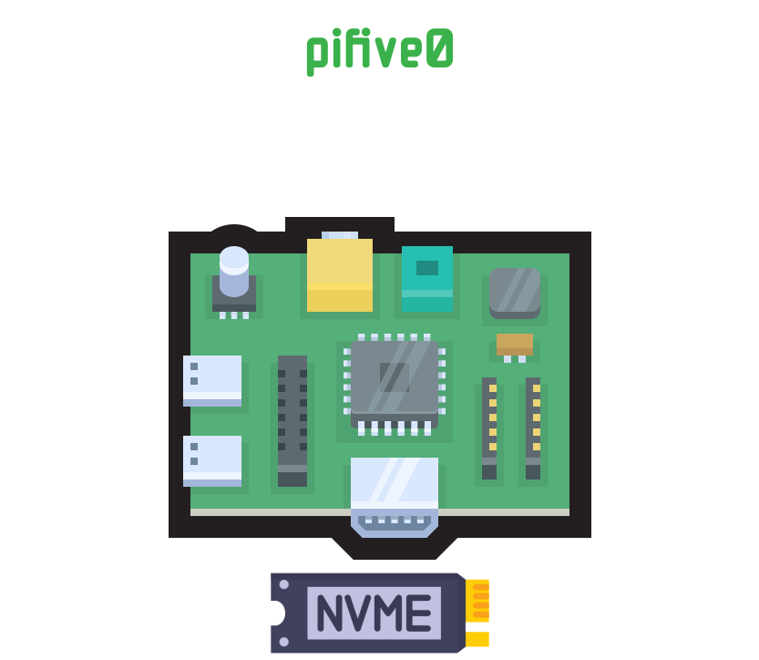
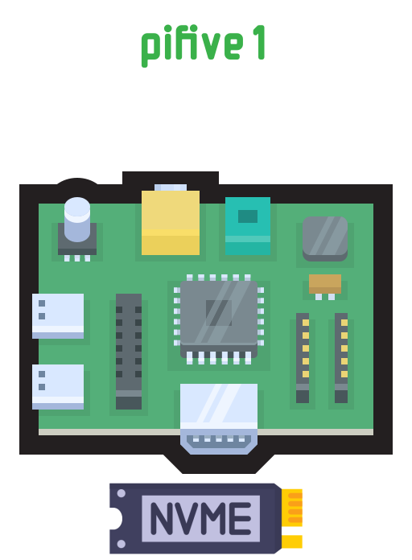
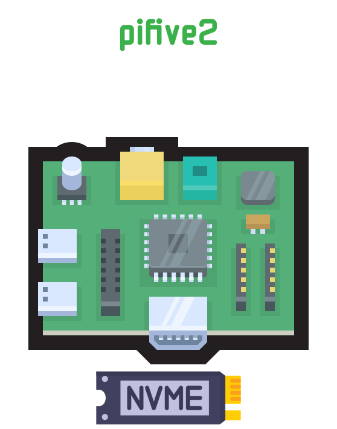
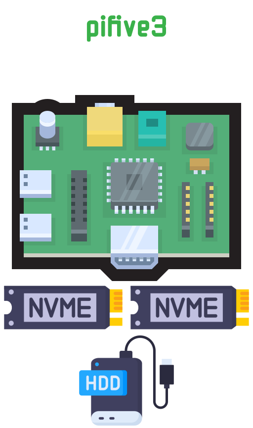
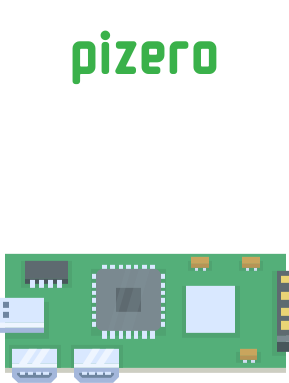
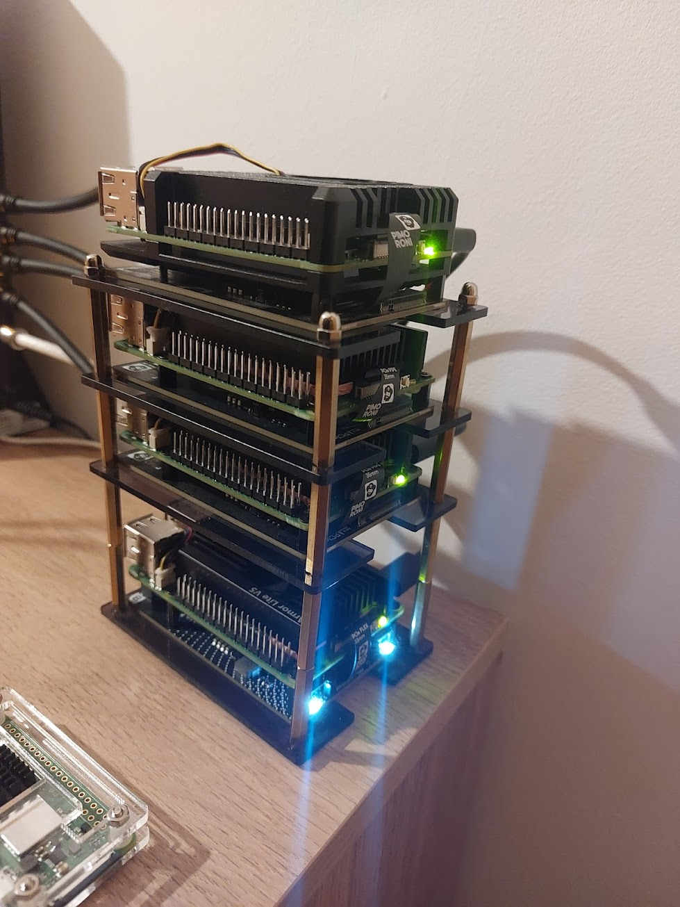

I've collected a small pile of Raspberry Pis over time: four Pi 5s and a little Pi Zero 2 W: and for a while they ran things in a sort of organic, "wherever it landed" way. One box did everything: apps, databases, the web server, monitoring, my website. It worked, but it was one dead power supply away from taking my whole world down with it.
So I sat down and gave each Pi a single, clear job. The guiding idea was simple: separate state from compute. Things that hold data should live apart from things that just run. Here's where I landed.
pifive0: The Front Door

Raspberry Pi 5 · 4GB · 250GB NVMe SSD
The single doorway to everything. I'm moving from nginx to Caddy here: it's modern, and its automatic HTTPS is hard to argue with. It terminates TLS, applies whatever routing rules I want, and passes traffic back to the apps on pifive1.
pifive1: The Apps

Raspberry Pi 5 · 8GB · 250GB NVMe SSD
Runs all my applications as Docker containers: backends, frontends, and my personal website (this one). The rule here is that everything is stateless: nothing important lives on this box, so if it dies I just redeploy.
pifive2: The Workshop

Raspberry Pi 5 · 4GB · 250GB NVMe SSD
My self-hosted GitHub Actions runners live here, so deployments build and ship from this machine. It also hosts Prometheus and Grafana, keeping my metrics and dashboards off the application box: so I can still see what's happening when something over there goes wrong.
pifive3: The Vault

Raspberry Pi 5 · 8GB · two 250GB NVMe SSDs + a USB HDD
My data lives here. The two SSDs form a RAID1 mirror, so a dead disk doesn't mean dead data. An USB HDD drive servers as a real second backup copy. There is a little bit of everything: Postgres, MongoDB, SQLServer and Redis.
pizero: The Watchman

Raspberry Pi Zero 2 W · 512MB · 16GB microSD
The little one has the simplest job: a small program that checks whether my services are healthy and emails me when they're not. Nothing fancy here just a C program doing this job.
What does it look like?
Well... something like this at the moment:

I'm working on better casing for the PIs. Maybe a 3D-printed solution or a rack.
What's next
This is a starting point and I already know the gaps: an off-site backup so a problem at home doesn't take everything with it, and a smarter monitor that can still reach me if the watchman itself goes quiet. But for now, every Pi has a purpose: and that alone makes the whole thing far easier to reason about.